<!DOCTYPE lake>
<h1 data-lake-id="LYhl7" id="LYhl7"><span data-lake-id="u6a150eab" id="u6a150eab">屏幕选型</span></h1><p data-lake-id="ue451221e" id="ue451221e"><span data-lake-id="u491809a7" id="u491809a7">智能家居和可穿戴设备常用的屏幕类型主要有以下几种：</span></p><h2 data-lake-id="oRqNe" id="oRqNe"><span data-lake-id="ub0ac7a9b" id="ub0ac7a9b">数码管</span></h2><ul list="u04ccf0f8"><li data-lake-id="u92f2bf18" fid="u7b4366df" id="u92f2bf18"><span data-lake-id="udd13d154" id="udd13d154">数码管是一种传统的显示器件，多个发光二极管（LED），通过点亮不同形状的灯丝来显示数字和字母。数码管的优点是成本低、功耗低、可视角度宽，但缺点是显示效果单一、无法显示复杂的图形。</span></li></ul><p data-lake-id="uacf7e876" id="uacf7e876" style="text-indent: 2em">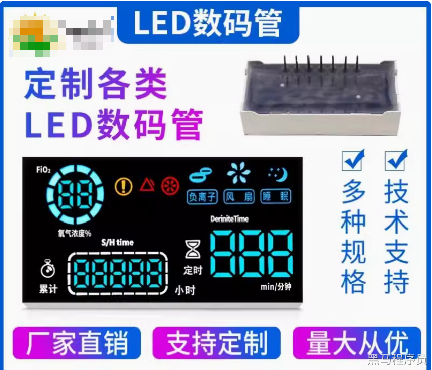</p><p data-lake-id="u3b3da92b" id="u3b3da92b" style="text-indent: 2em">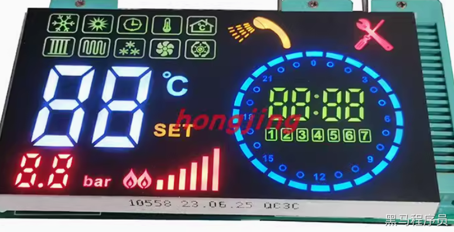</p><h2 data-lake-id="amOaY" id="amOaY"><span data-lake-id="u3b87f16b" id="u3b87f16b">段码屏（液晶）</span></h2><ul list="u04ccf0f8" start="2"><li data-lake-id="u8685fadd" fid="u7b4366df" id="u8685fadd"><span data-lake-id="ud9ab9cba" id="ud9ab9cba">段码屏是由液晶LCD组成的显示器件，每个发光二极管可以单独控制。段码屏可以显示数字、字母和简单的图形，但显示效果仍然比较粗糙。</span></li></ul><p data-lake-id="u542272b6" id="u542272b6" style="text-indent: 2em">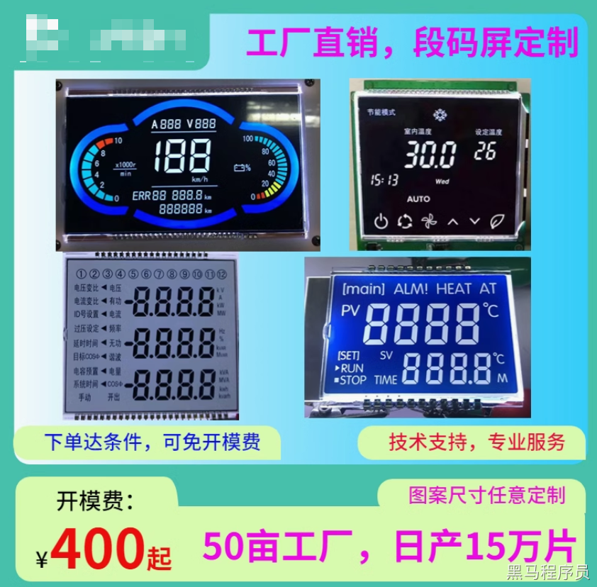</p><p data-lake-id="u101b5b3a" id="u101b5b3a" style="text-indent: 2em">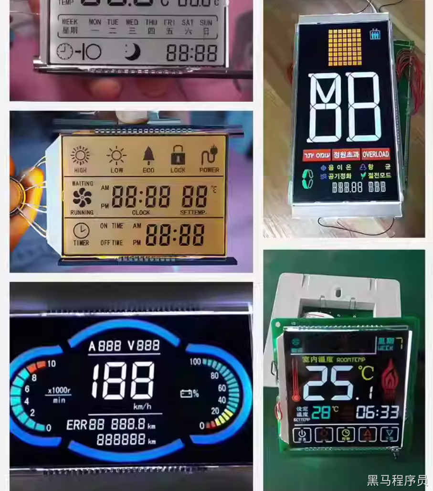</p><p data-lake-id="ucb22d6da" id="ucb22d6da"><br/></p><p data-lake-id="u4e61345e" id="u4e61345e"><br/></p><h2 data-lake-id="Hh023" id="Hh023"><span data-lake-id="u8ec3b959" id="u8ec3b959">OLED单色显示屏</span></h2><p data-lake-id="u96a70c48" id="u96a70c48"><span data-lake-id="ue2324b84" id="ue2324b84">OLED显示屏是一种新型的显示技术，具有自发光、高对比度、广视角等优点。OLED显示屏比TFT液晶屏更薄、更省电，可以制作成柔性显示屏。OLED显示屏被广泛应用于高端智能手机中，也被用于一些智能手表、智能眼镜等可穿戴设备中。</span></p><p data-lake-id="u5bb54060" id="u5bb54060">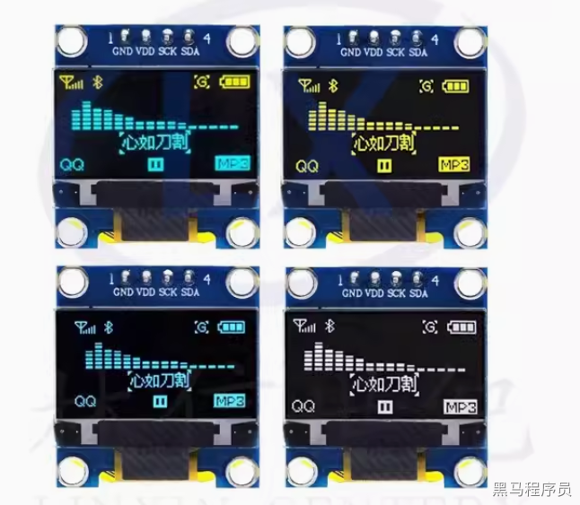</p><h2 data-lake-id="YRkLG" id="YRkLG"><span data-lake-id="ue3efbe1f" id="ue3efbe1f">LCD屏幕</span></h2><p data-lake-id="u0dd0b3b2" id="u0dd0b3b2"><span data-lake-id="u8f71cdf4" id="u8f71cdf4">又称为点阵屏（液晶），驱动芯片：ST7920</span></p><p data-lake-id="u322cf115" id="u322cf115">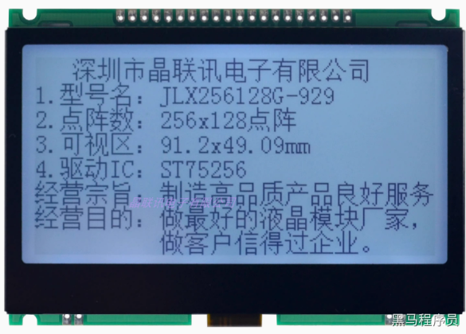</p><p data-lake-id="u691cf8b7" id="u691cf8b7"><span data-lake-id="u8fcc8844" id="u8fcc8844">驱动芯片： HD44780  </span></p><p data-lake-id="ud54506c2" id="ud54506c2">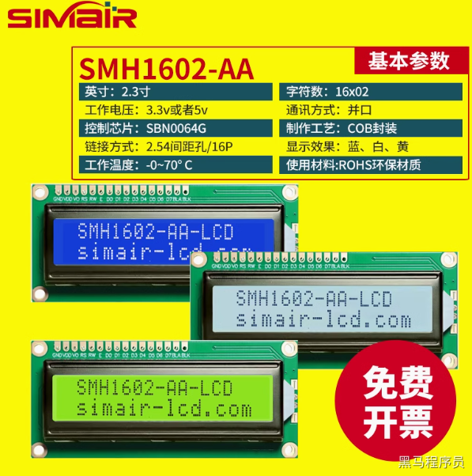</p><h2 data-lake-id="v6J1q" id="v6J1q"><span data-lake-id="u40ab92e6" id="u40ab92e6">LED点阵屏</span></h2><p data-lake-id="u55b4e6a2" id="u55b4e6a2">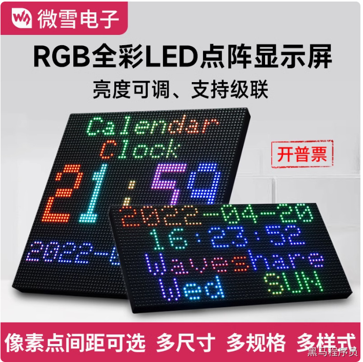</p><p data-lake-id="ua761e28d" id="ua761e28d">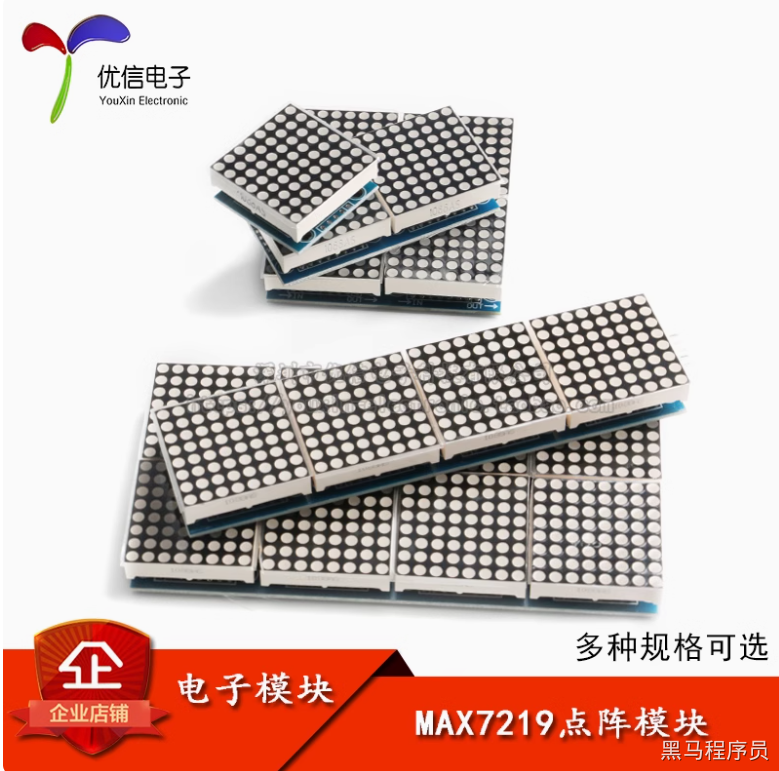</p><h2 data-lake-id="V6XGa" id="V6XGa"><span data-lake-id="uf6b02182" id="uf6b02182">TFT/IPS彩色液晶屏</span></h2><p data-lake-id="u11466a13" id="u11466a13"><span data-lake-id="ue7ed8f15" id="ue7ed8f15">TFT液晶屏（属于LCD）是一种成熟的显示技术，具有高分辨率、高色彩、高亮度等优点。TFT液晶屏被广泛应用于智能手机、平板电脑等电子设备中，也被用于一些智能家居设备和可穿戴设备中。有时候也称为LCD屏</span></p><p data-lake-id="ucfe6082d" id="ucfe6082d" style="text-indent: 2em">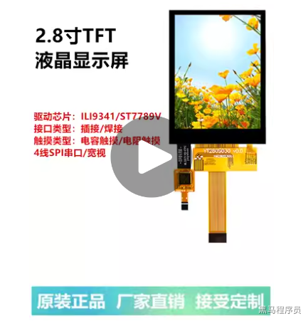</p><h2 data-lake-id="VzqF8" id="VzqF8"><br/></h2><h2 data-lake-id="sbu7C" id="sbu7C"><span data-lake-id="u91308215" id="u91308215">其他屏幕</span></h2><p data-lake-id="u1547d781" id="u1547d781"><span data-lake-id="ua07d5476" id="ua07d5476">除了以上几种常见的屏幕类型之外，还有一些新兴的显示技术也被应用于智能家居和可穿戴设备中，例如：水墨屏、柔性曲面屏</span></p><h3 data-lake-id="SSE1o" id="SSE1o"><span data-lake-id="u77b84ac6" id="u77b84ac6">电子墨水屏</span></h3><p data-lake-id="u47052c61" id="u47052c61"><span data-lake-id="u38a591a4" id="u38a591a4">电子墨水屏具有类似于纸张的显示效果，可以长时间保持画面内容而无需刷新，非常省电。电子墨水屏常被用于智能阅读器和一些智能手表中。</span>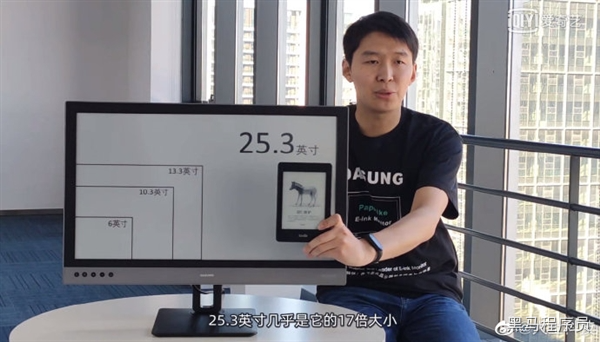</p><h3 data-lake-id="FE7hn" id="FE7hn"><span data-lake-id="ub6515df1" id="ub6515df1">柔性显示屏</span></h3><p data-lake-id="u6680d879" id="u6680d879"><span data-lake-id="ueec7935c" id="ueec7935c">柔性显示屏可以弯曲、折叠，甚至拉伸，具有很高的设计自由度。柔性显示屏被认为是未来可穿戴设备发展的重要方向。</span></p><p data-lake-id="ucc59354d" id="ucc59354d" style="text-indent: 2em">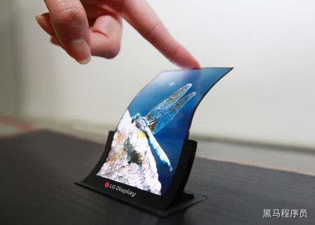</p><p data-lake-id="ue6dd2118" id="ue6dd2118"><span data-lake-id="uc98dfb35" id="uc98dfb35">具体选择哪种屏幕类型取决于智能家居和可穿戴设备的具体应用场景和需求。例如，如果需要显示简单的信息，例如时间、温度等，可以使用数码管或段码屏；如果需要显示复杂的信息和图形，则需要使用TFT液晶屏或OLED显示屏；如果需要长时间显示静态画面，则可以使用电子墨水屏；如果需要可弯曲、折叠的显示屏，则可以使用柔性显示屏。</span></p><p data-lake-id="u58bd4417" id="u58bd4417"><span data-lake-id="ucdd9bf11" id="ucdd9bf11">以下是一些关于智能家居和可穿戴设备中屏幕类型选择的建议：</span></p><ul list="uab183889"><li data-lake-id="u690a6441" fid="u5fc404a0" id="u690a6441"><strong><span data-lake-id="u0eaf0fd5" id="u0eaf0fd5">对于价格敏感的设备，可以使用数码管或段码屏。</span></strong></li><li data-lake-id="u438fcaaf" fid="u5fc404a0" id="u438fcaaf"><strong><span data-lake-id="uf0ffe20f" id="uf0ffe20f">对于需要高分辨率和高色彩显示效果的设备，可以使用TFT液晶屏或OLED显示屏。</span></strong></li><li data-lake-id="uccafac4e" fid="u5fc404a0" id="uccafac4e"><strong><span data-lake-id="u667e8746" id="u667e8746">对于需要长时间显示静态画面的设备，可以使用电子墨水屏。</span></strong></li><li data-lake-id="ue9071360" fid="u5fc404a0" id="ue9071360"><strong><span data-lake-id="u838e2f20" id="u838e2f20">对于需要可弯曲、折叠的显示屏的设备，可以使用柔性显示屏。</span></strong></li></ul>